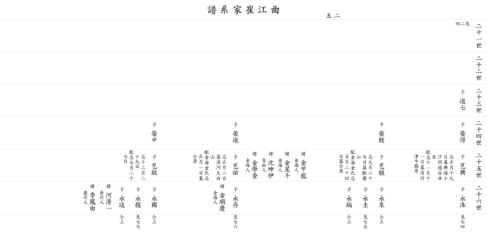

| 곡 강 최 가 계 보 |
| 이전☜ 쪽 25 ☞다음 |
| 21세 | ||||||||||||
| 22세 | ||||||||||||
| 23세 |
▲ 도칠 道七 |
아버지 ▲태재(泰才)의 둘째 아들 미상 |
||||||||||
| 24세 |
영득 榮得 |
미상 |
영은 榮殷 |
생졸일 미상 사위 김해인 김갑룡(金甲龍) 사위 김해인 김성두(金星斗) 사위 청송인 심곤이(沈坤伊) 사위 김해인 김학규(金學奎) |
영진 榮進 |
미상 |
영중 榮中 |
미상 |
||||
| 25세 |
돌흥 乭興 |
제삿날 1월19일 묘 흥해 소한동 덕골(德谷) 남남서향(丑坐) 할머니 제삿날 11월11일 묘 청하진 우슬원 |
돌식 乭植 |
제삿날 9월27일 묘 증령산 할머니 김해김씨 제삿날 5월24일 묘 할아버지와 같은 곳 |
돌우 乭佑 |
제삿날 1월 2일 묘 청하 대백산 할머니 김해김씨 제삿날 1월 1일 묘 할아버지와 같은 곳 사위 김해인 김순경(金順慶) |
돌경 乭敬 |
제삿날 12월29일 할머니 제삿날 7월27일 사위 진주인 하청일(河淸一) 사위 경주인 이봉유(李鳳由) |
||||
| 26세 |
영수 永洙 ▼ |
영래 永來 ▼ |
영규 永圭 ▼ |
영호 永鎬 ▼ |
영존 永存 ▼ |
영국 永國 ▼ |
영모 永模 ▼ |
영술 永述 ▼ |
||||
| 이전☜ 쪽 25 ☞다음 |
|  |